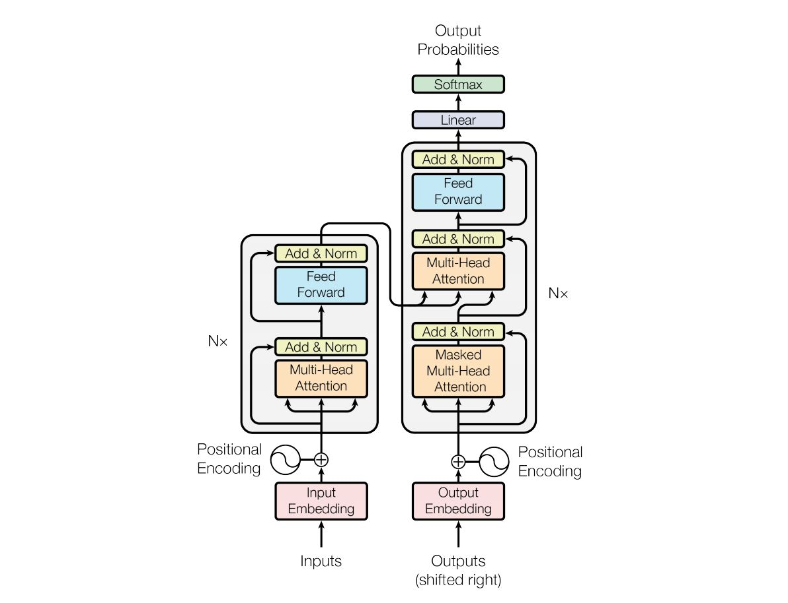

RESOURCES
这个是我学习datawhale教程datawhalechina/llm-algo-leetcode 的笔记，作为原始内容的补充，以及加入我本人的一些理解。
NOTE
Q1：假设隐藏层维度为 ，词表大小为 。请推导一个包含 层的标准 Transformer Decoder 的总参数量。
Transformer 架构图

把 Transformer Decoder 拆解为三大部分（忽略极小的 bias 和 LayerNorm 的权重，它们对百亿参数的占比不到千分之一）：
- 嵌入层 (Embedding Layer) 与 输出层 (LM Head) — 一头一尾
- 多头注意力机制 (Multi-Head Attention, MHA) — 每个 Decoder Block 里
- 前馈神经网络 (Feed Forward Network, FFN / MLP) — 每个 Decoder Block 里
Example: 一个 Transformer Decoder 模型（如 LLaMA）处理文字的完整流程
文字 "我喜欢猫" │ │ ① Tokenizer 分词（不是参数，独立于模型之外） ▼ [45, 892, 1234] ← token ID 编号 │ │ ② 嵌入层 Embedding ← 【参数位置 #1】 ▼ [向量, 向量, 向量] ← 每个 ID 查表变成 d 维向量 │ │ ③ Decoder Block × L 层 ← 【参数位置 #2 和 #3】 ▼ 经过 Decoder Block 改造后的向量们 │ │ ④ 输出层 LM Head ← 【参数位置 #4】 ▼ 32000 个概率 → 概率最大词作为输出4 个步骤详解 输入 → 嵌入 → 计算 → 输出。
这 4 个步骤不是 Transformer Decoder 特有的，而是所有语言模型的通用流程：
- 第一步：分词 (Tokenization) —— 这一步不在模型里
- 先有一个叫 Tokenizer 分词器的东西，它不是模型参数，是一个单独的工具。它的活就是把文字切成小块，然后查一个映射表（这个表也不是参数，就是一张固定的对照表），把每个小块变成一个编号：
- “我喜欢猫” → 分词器 → [45, 892, 1234]
- “我”对应编号 45，“喜欢”对应 892，“猫”对应 1234。这就是 token ID。
- 第二步：嵌入 (Embedding) —— 这里开始用参数了
- 拿着这三个编号，去嵌入层那张表里查：
- 编号 45 → 查表的第 45 行 → [0.12, -0.34, 0.56, …] (d维向量)
- 编号 892 → 查表的第 892 行 → [0.78, 0.91, -0.12, …] (d维向量)
- 编号 1234 → 查表的第 1234 行 → [0.33, -0.67, 0.22, …] (d维向量)
- 就像查字典一样，编号是页码，翻到那一页把向量抄出来。这张表就是模型参数的一部分。
- 第三步：过 Decoder Block
- 原始文本变成的向量，一起通过 层 Decoder Block（注意力 +FFN），向量不断被改造，吸收上下文信息。这一步不涉及词表。
- 第四步：输出 (LM Head) —— 又用到词表了
- 经过所有层之后，最后一个位置输出的向量（比如 [0.44, 0.12, …]），需要变成”下一个词是谁”的概率。
如果开启了共享参数，“和每个 token 算相似度”用的就是嵌入层同一张表；没共享的话，就有两张词表，各自独立。LLaMA 没共享。
1. 嵌入层 (Embedding Layer) 与 输出层 (LM Head)
词表有 个 token，每个 token 对应一个 维向量（ 个浮点数）。
| 第1维 | 第2维 | … | 第d维 | |
|---|---|---|---|---|
| token 0 | 0.12 | -0.34 | … | 0.56 |
| token 1 | 0.78 | 0.91 | … | -0.12 |
| … | … | … | … | … |
| token V-1 | … | … | … | … |
- Token Embedding：形状 ，参数量
- LM Head (输出映射)：形状 ，参数量 嵌入层 + 输出层总参数量 =
共享权重
很多模型（如 Gemma/Qwen）会共享这两个权重，参数量减半。LLaMA 没有共享，所以是两份，而且两份是不一样的
2. 多头注意力机制 (Multi-Head Attention, MHA)
在每个 Decoder Block 中，注意力要做 4 次投影——就是乘一个 的方阵：
| 投影 | 做什么 | 矩阵形状 | 参数量 |
|---|---|---|---|
| Q (Query) | “我在找什么” | ||
| K (Key) | “我有什么” | ||
| V (Value) | “我的内容” | ||
| O (Output) | “汇总输出” |
MHA 总参数量 =
GQA
如果采用 GQA (Grouped Query Attention)，K 和 V 的参数量会大幅减少，这里按最原始的多头注意力机制（MHA）来计算。
3. 前馈神经网络 (Feed Forward Network, FFN / MLP)
在标准 GPT 架构中，隐藏层会先升维到 ，再降维回 ：
d 维 ──→ 升维矩阵 W_up [d, 4d] ──→ 4d 维 ──→ 降维矩阵 W_down [4d, d] ──→ d 维
4d² 个参数 4d² 个参数
- 升维矩阵 ：，参数量
- 降维矩阵 ：，参数量
FFN 总参数量 =
SwiGLU（LLaMA 用的激活函数）
LLaMA 使用 SwiGLU，维度变为 ，但有 3 个矩阵（而不是 2 个），总参数量依然是
汇总
- 一个 Decoder Block 的参数量 = (Attention) + (FFN) =
- 总参数量
Example: 带入 LLaMA-7B 验证（ ）
- Block 参数 = Billion
- Embedding = Billion
- 总计约 6.7B，加上零碎的约等于 7B——这就是所谓的 7B 模型
注意：64 亿 / 66 亿 ≈ 97% 的参数都在中间那 层 Block 里，嵌入层和输出层反而是小头。
Q2：前向传播 (Inference / Forward Pass) 的 FLOPs 是怎么计算的？
在 Q1 我们算出了模型有多少参数，而在这个问题中，我们想知道，这些参数动起来干活的时候，要做多少次计算？
FLOPs = FLoating-point OPerations（浮点运算次数），就是 GPU 做了多少次浮点数的加法或乘法。
FLOPs vs FLOP/s
- FLOPs（小写 s）= 浮点运算次数（一个数量，比如 FLOPs）
- FLOP/s（斜杠 s）= 每秒做多少次浮点运算（一个速度，比如 A100 的 312 TFLOP/s）
一个算总量，一个算速度。
核心经验法则：1 个参数处理 1 个 Token ≈ 2 次浮点运算 (FLOPs)
为什么 1 个 Token ≈ 2 次浮点运算？
因为矩阵乘法 中，每一个格子的计算过程就是：
y = w1×x1 + w2×x2 + w3×x3 + ... ↑乘 ↑加 ↑乘 ↑加每一个权重元素 贡献一次乘法（），结果要累加一次（加法）——一次乘法 + 一次加法 = 2 FLOPs。这叫 MAC (Multiply-Accumulate，乘加操作)。所以 1 个参数 = 2 FLOPs。
向前传播所需要的计算量公式： 整个公式的意思（粗糙直观一点）就是，向前传播所需要的计算量，是两倍 模型大小与输入的尺寸的乘积。
- = 参数量 (Parameters)，Q1 算出来的
- = 处理的 Token 数量 (Tokens)
为什么可以忽略 Attention 矩阵乘积的算力？
Q1 里数的那些参数（Q、K、V 投影矩阵，FFN 升维降维矩阵）参与的计算叫线性层计算，这是 算的部分。
但 Attention 里面还有一步不涉及权重参数的计算： 和 （用已经投影好的 Q、K、V 向量互相乘）。这部分的计算量和 成正比，而线性层和 成正比。
对于大模型来说， 通常比 大（或差不多），所以 ，线性层占绝对大头，Attention 的那份可以忽略不计。但如果 特别大（比如长文本），Attention 的计算量就会反超——这就是长文本推理慢的原因之一。
Q3：训练 (Training) 时包含前向和反向传播，那么总的 FLOPs 是多少？
Q2 算出了推理的算力：。训练比推理多了一步——反向传播 (Backward Pass)，就是算梯度。（回忆上一章 Q4 讲混合精度训练时提到的，反向传播是算出梯度然后更新权重的步骤。）
反向传播里面要做两件事：
- 算激活值 (Activations) 的梯度——把误差往回传，告诉前面每一层”你哪里做错了” → 大约 FLOPs
- 算权重 (Weights) 的梯度——算出每个参数该怎么调整 → 大约 FLOPs
所以反向传播 = ，是前向传播的 2 倍。
记忆口诀：前向 2、反向 4、训练总共 6。
Example: 从头预训练 LLaMA-7B，训练数据 1T (万亿) Token
需要的总算力：
如果你有 1000 张 A100，每张实际跑出 150 TFLOPs（即 FLOP/s）：
当然这是理想情况。实际上 GPU 不可能 100% 时间都在算矩阵乘法——这就是 Q4 要讲的 MFU。
Q4：训练大模型时，什么是算力利用率 (MFU, Model FLOPs Utilization)？
Q3 算出了理论所需算力 ，这是假设 GPU 每一纳秒都在做矩阵乘法。但现实中 GPU 很多时间在等，没有在算。等什么呢？
1. 等数据搬运——显存墙 (Memory-bound)
GPU 的计算单元飞快，但数据从显存搬到计算单元需要时间。这个等待时间 GPU 是闲着的，没有在做有效的乘加运算。
2. 等其他 GPU——通信瓶颈 (Communication)
大模型训练得几百上千张卡一起干。每轮算完梯度后，所有卡要把各自的结果汇总（这个操作叫 All-Reduce），数据在卡之间传来传去需要时间。这段时间 GPU 也是闲着的。
所以就有了 MFU (Model FLOPs Utilization，模型算力利用率) 这个指标：
- 理论峰值算力：显卡说明书上写的。比如 A100 的 BF16 峰值是 312 TFLOPs（每秒 312 万亿次浮点运算）
- 实际达到的算力：用 Q3 的 算出总算力，除以实际跑完花的时间
工业界顶级预训练集群的 MFU 一般在 40% ~ 60%。也就是说，理论算力只能发挥出一半左右。如果你微调时 MFU 只有 10%，说明你的代码有问题——可能没开梯度累加、数据读取成了瓶颈之类的。